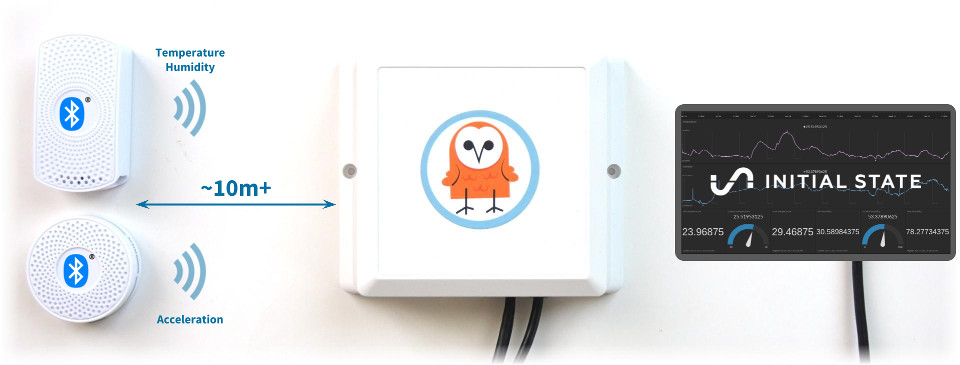
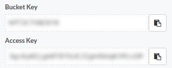

Forward BLE sensor data to Initial State
Collect and visualise the data from any sensor beacon with ease
Initial State is a web platform which lets you stream data from your devices and applications to beautiful visualizations in your web browser. In this tutorial we'll show how to use the reelyActive platform to listen for sensor data from third-party Bluetooth beacons and forward the real-time stream to Initial State.
 Hears Here's a motivating example
Temperature and humidity timeseries from a sensor beacon
The above uses the share by embed feature of Initial State. You can also open the visualisation directly in your browser via this link.
What's a BLE sensor beacon?
A Bluetooth Low Energy (BLE) sensor beacon is a device which spontaneously transmits the data from its embedded sensors. Any listening devices in range can receive such messages.
Note that the transmitter and the receiver do not need to be paired, and a single transmission can be received by multiple listening devices.
The following non-exhausive list includes sensor beacons which are recognised by advlib, our open source packet decoding library:
| Manufacturer | Model | Sensors |
|---|---|---|
| Minew | S1 | Temperature, Humidity |
| Minew | I7 | Acceleration (3-axis) |
| Estimote | Sticker Beacon | Temperature, Acceleration (3-axis) |
Prerequisites
Sensor Beacon
Obtain a sensor beacon from the list above, or any other sensor beacon whose packets you are able to decode.
Listening Device
This tutorial will assume you have either a reelyActive starter kit or a BLE-capable Raspberry Pi and have completed the corresponding tutorial:
Install a Starter Kit Make a Pi Hub
Initial State Account
Create a (free) Initial State account or sign into your existing account:
Then create a new Stream Bucket and note the Bucket Key and Access Key from the settings.
The code
The following code example for Node.js will listen using a reelyActive minimal starter kit, and push the temperature and humidity data of a single Minew S1 beacon, as specified by its 48-bit identifier, to Initial State.
const barnowl = require('barnowl');
const initialstate = require('initial-state');
const BUCKET_KEY = 'BUCKETKEYGOESHERE'; // Update these from
const ACCESS_KEY = 'ACCESSKEYGOESHERE'; // Initial State settings
const SENSOR_MAC = 'ac233fa00000'; // From S1 Beacon label
var middleware = new barnowl();
var bucket = initialstate.bucket(BUCKET_KEY, ACCESS_KEY);
// This assumes minimal starter kit (see barnowl for where to listen)
middleware.bind( { protocol: 'serial', path: 'auto' } );
// Something was decoded
middleware.on('visibilityEvent', function(tiraid) {
var isMAC = (tiraid.identifier.value === SENSOR_MAC);
// Specified sensor beacon was decoded
if(isMAC) {
// Point to the data specific to this sensor
var minew = tiraid.identifier.advData.serviceData.minew;
// Push the sensor data values to the Initial State bucket
bucket.push('temperature', minew.temperature);
bucket.push('humidity', minew.humidity);
}
});
Configuration
If you happen to have a S1 beacon and a minimal starter kit, the only configuration required is to update the BUCKET_KEY, ACCESS_KEY and SENSOR_MAC.
Update the middleware.bind parameters if you're using something other than a minimal starter kit (see barnowl: Where to listen?).
Update the sensor-specific code if you have a different sensor.
Install and run
Copy the configured code to a file called server.js. From that directory, from the command line, first install the barnowl and initial-state packages, and then run as follows:
npm install barnowl npm install initial-state node server
Considerations
The above code will push every received packet to Initial State. Consider adjusting the update rate of the sensor beacon as appropriate (if possible) or limiting the update rate in the code.
Some sensor beacons will interweave packet types. Consider verifying that sensor data is indeed present in the received packet before pushing to Initial State.
Don't give a hoot about sensor integration?

Our Pareto platform combines the convenience of SaaS with plug-and-play hardware. Leave the sensor integration to us.
What's next?
Learn how to use a Raspberry Pi to collect and forward the sensor data (and so much more!), or learn how to create your own client-side sensor data visualisations using beaver.js, or return to the diyActive home page.
Make a Pi Hub Build web apps with beaver.js Return to diyActive